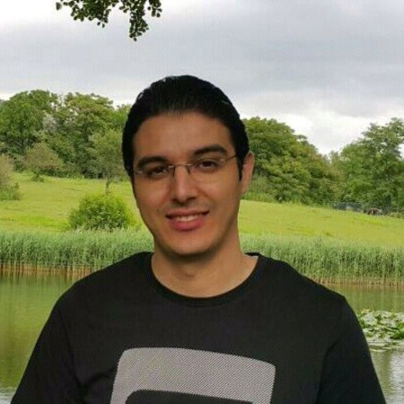

Dr. Abderrahim Ait Wakrime
Associate Professor in Computer Science
Faculty of Sciences, Mohammed V University in Rabat, Morocco.
My academic and professional career combines teaching, scientific research, and participation in collaborative research and development projects.

Welcome to my academic website.
I am an Associate Professor (Maître de Conférences Habilité) in the Computer Science Department at the Faculty of Sciences, Mohammed V University in Rabat, Morocco.
Professional background
Before joining Mohammed V University, I worked as a research scientist at the Institute for Technological Research Railenium and at Télécom SudParis - Institut Polytechnique de Paris in France. I also served as a Research and Teaching Assistant at the University of Orléans.
Research interests
Software and System Engineering, Critical Systems, Model Transformation, Formal Methods, and Cybersecurity, with applications to transport systems, scientific visualization systems, electronic voting systems, and RFID systems.
Education
University Habilitation in Computer Science, Mohammed V University.
Ph.D. in Computer Science, University of Orléans, France.
Intelligent Systems and Applications, University of Artois, France.
Network and Information System Security, Hassan II University, Morocco.
Research & Teaching
Research
Software/System Engineering · Critical Systems · Model Transformation · Formal Methods · Cybersecurity
Teaching
Software Engineering · Programming · Web Programming · Formal Methods · System and Network Architecture · Databases · Cybersecurity
Academic activities
Research Projects
Participation in national and international collaborative research projects.
International Conferences
Conference organization, scientific committees, and international academic activities.
Master's Program Coordination
Coordinator of the Master's program in Computer Engineering and Systems Security.